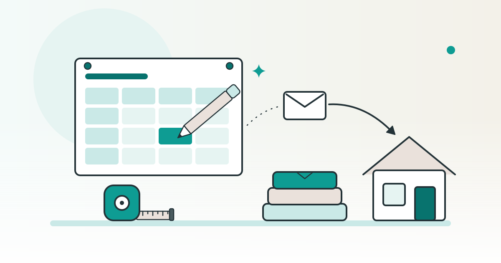

SHOPKIT コラム
子供服のサイズ表を訂正したら注文済みの人へ伝えることと記録

子供服のサイズ表に誤りが見つかったら、直した値とその根拠を残し、誤った表が出ていた間の注文を調べましょう。注文済みのお客様に伝える情報と、案内後の返答・対応も分けて記録します。一人でお店を続ける方に向けて、訂正を見つけた後の整理の仕方を紹介します。
この記事は、完成品のネットショップを販売している SHOPKIT が書いています。
誤っていた値と、訂正の根拠を先に残す
どの商品・サイズの、どの項目を直したかが分かる記録を作ります。品番、色、サイズ名、測った場所、単位を、訂正前後の表と結び付けましょう。表の画像を差し替えるだけでなく、何が変わったかを後から見返せるようにします。
訂正する根拠は、実際に測った記録や販売元の資料で確かめます。使った資料の名前と日付、確認した人を残し、実物と資料が合わない所は確認中として分けてください。根拠がない値を、ほかのサイズから想像して埋めることは避けましょう。
| 訂正の記録 | 残す内容 |
|---|---|
| 対象の商品 | 品番、色、サイズ名、対象の表の保存先 |
| 変更する項目 | 測った場所、単位、訂正前の表示、確かめた訂正後の値 |
| 根拠 | 実測の記録や販売元の資料、確認した日と人 |
| 残った確認 | 実物と資料の違い、確かめている相手、未回答の項目 |
同じサイズ名でも、別の商品や、別の入荷分まで同じ値とは決めないようにします。今回の訂正がどの服に当たるかを確認し、対象の範囲を記録しましょう。測り方そのものの説明には広げず、訂正に使った根拠を残すことに絞ります。
誤った表が出ていた期間と、その間の注文を照らす
いつから、どこに誤った表が出ていたかを調べ、対象の注文を探します。商品ページの表だけでなく、説明に使った画像や案内にも同じ表がないかを確認しましょう。直した場所と、まだ確認が残る掲載先を分けます。
記録には、誤った表を載せたと分かる日、訂正した日、表示を確かめた日を残します。掲載を始めた日時が分からない場合は、分かっている最も古い保存記録と、調べられていない期間を分けてください。記録がない期間を、誤りがなかった期間と扱わないようにしましょう。
注文を照らすときは、商品名だけでなく、品番・色・サイズ・注文日を使います。対象になり得る注文を一覧にし、発送前、発送済み、問い合わせ中など、現在の状態を残します。後から訂正した表だけを見て、注文時にも同じ案内が出ていたことにはしないようにします。
どの表示を見て購入したかまで分からない場合は、その点も分けて残しましょう。表の掲載期間と注文日が重なること、実際にその表を見たと確認できることは、同じ記録にはしません。
注文済みの人に伝える内容を、訂正前後の表でそろえる
何を訂正したかと、お客様に確認・相談していただく先を、同じ情報で案内します。対象の服、誤っていた項目、訂正前後の値、確かめた根拠を整理しましょう。注文済みのお客様には、どの注文についての案内かも分かるようにします。
| 案内する内容 | そろえる情報 |
|---|---|
| 対象 | お客様の注文番号、対象の商品・色・サイズ |
| 訂正した所 | 同じ項目と単位で並べた訂正前後の表示 |
| 確認した根拠 | 実測や販売元の資料で何を確かめたか |
| 連絡先と次の確認 | 問い合わせ先、店で確認していること、お客様へ確認したいこと |
発送前と発送済みで必要な相談が違う場合は、注文の状態に合わせて案内を確認します。まだ決まっていない対応は、決まったことと混ぜずに書き分けてください。表を直したことだけで、個々のお客様への対応が終わったことにはしません。
案内文は、商品ページに載せる訂正後の表と照らしてから使いましょう。前の値と新しい値が逆になっていないか、幅と丈などの項目を取り違えていないか、単位が合っているかを確かめます。
案内した相手と日付を記録する
連絡したこと、返答があったこと、対応を終えたことを別々に残します。注文番号ごとに、伝えた内容と日付、使った連絡先、返答の有無、次に確かめることを記録しましょう。送っただけで相手が読んだと分かる扱いにはしません。
お客様からサイズの再確認や交換などの希望が来た場合は、希望の内容と、お店が受け付けた対応を分けます。表示の訂正に関するやり取りから、元の注文とその後の対応をたどれるようにしましょう。交換の条件や返送・再発送の手順全体は、ここでは扱いません。
連絡が取れない場合も、連絡を試みた日と経路、返答を待っている内容を残します。反応がないことだけで、そのお客様には影響がなかったと決めないようにしてください。
対応を閉じるときは、未回答の質問や店側の作業が残っていないかを確認します。閉じた日と確認した人を残し、訂正後の表の保存先も同じ記録から見返せるようにしましょう。
表示の誤りは、公的な資料と照らして確かめる
誤っていた表示と確認した事実を整理し、公的な資料と照らせるようにします。サイズ表の誤りについて、個別の補償や契約上の結論をこの記事で決めることはしません。
消費者庁の景品表示法関係ガイドライン等には、ネット上で商品を売る際の表示を扱う資料などが、表示に関する資料として並んでいます。題名が近い資料があっても、今回のサイズ表の誤りに当てはまるかどうかは、一覧だけでは決められません。
また、消費者庁の特定商取引法ガイド「通信販売」は、事実と大きく異なる内容や、実際よりも大幅に良いと思わせる広告を禁止する規定を説明しています。
訂正前後の表、根拠の資料、掲載していた期間、対象の注文、お客様とのやり取りをまとめ、判断が必要な点を公的な窓口などに確かめましょう。返品・交換の条件を確認する際は、注文時の案内と今回の訂正を分けて相談できるようにします。
関連：ネットショップの返品の決まり｜通信販売にクーリング・オフは無い？返品特約の書き方
受け取ったサイズ表は、測り直してから使う
お店を買って始める場合も、受け取るサイズ表と、その根拠を確かめましょう。表と実物を照らし、違いがあれば販売元への確認や測り直しの記録を残します。どの場所をどう測るかの詳しい説明は、ここでは繰り返しません。
関連：服のネットショップを始めるには｜品質表示・原産国・サイズの伝え方
SHOPKITの2026年10月15日時点のサービスページは、商品と店舗を整えて販売を始める準備をした状態でお渡しすると案内しています。お渡しする内容には、お店一式と仕入れの情報、運営・集客のマニュアルが含まれます。出典：お渡しするもの。
購入前には、サイズの資料と実物の確認をどう進めるか、違いが見つかったときに誰へ質問するかを聞いておきましょう。マニュアルが付くことと、表の訂正や注文済みのお客様への対応を誰が行うかは、分けて確かめます。
関連：韓国子供服のネットショップを始めるには｜仕入れ・価格帯・サイズ表記
よくある質問
子供服のサイズ表を訂正したら、前の表も残しますか？
何が変わったかを確認できるように、訂正前後の表と根拠を記録に残しましょう。対象の品番・色・サイズ、測った場所と単位もそろえます。
誤ったサイズ表を載せ始めた日が分からないときは、どう記録しますか？
分かっている最も古い保存記録と、調べられていない期間を分けて残します。記録がない期間を、誤りがなかった期間とは扱わないようにしましょう。
注文済みのお客様への訂正案内には、何を入れますか？
対象の注文と服、訂正前後の値、確かめた根拠、問い合わせ先をそろえます。決まっている対応と、確認中の内容は分けて伝えましょう。
サイズ表の訂正を連絡したら、対応を完了にしてよいですか？
案内、返答、その後の対応を分けて確認します。質問や店側の作業が残っていないかを確かめてから、閉じた日を記録しましょう。
※ この記事のSHOPKITのお渡しするものは、2026年10月15日時点のサービスページの記載です。公的資料は2026年10月26日に確認しました。補償や契約などの個別の判断が必要な所は、公的な案内と関係する窓口で確かめてください。